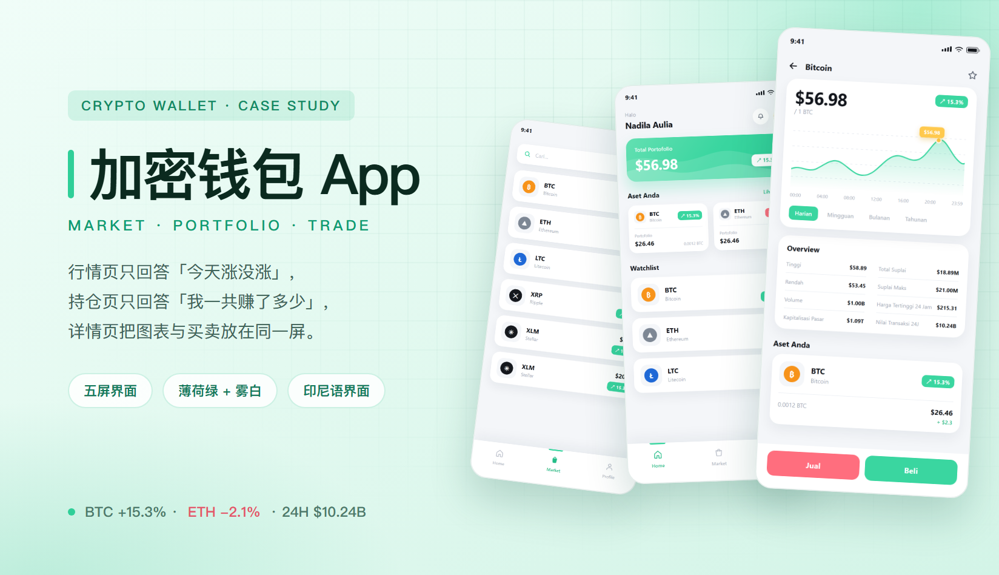
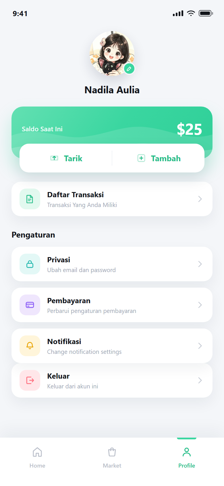
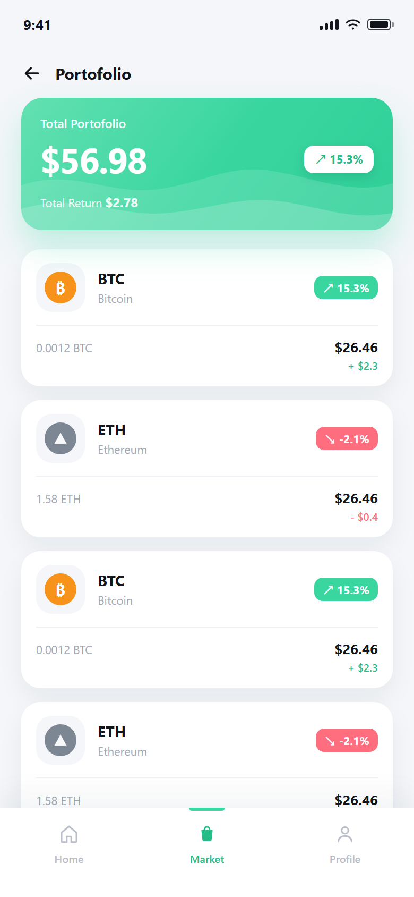

加密钱包 App · 行情 / 持仓 / 买卖
交易类 App 的用户其实只问三件事：「今天涨没涨」「我一共赚了多少」「现在该买还是卖」。这三句话对应三种信息密度：行情页最轻，一行一个币；持仓页居中，一张卡加逐币拆账；详情页最重，图表、八个数字与买卖按钮同屏。这次交付的五屏就是这条链路的完整走法——不求把所有功能摊开，只求每一屏都只回答一个问题。
主视觉

项目背景
印尼市场 · 加密资产交易 · 印尼语界面
这款 App 面向印尼市场，用户用印尼盾入金，买卖 BTC / ETH / LTC / XRP / XLM 等主流币。客群大多不是专业交易员，而是刚接触加密资产的普通人：他们不看深度图与委托单，只关心「这个币现在多少钱」「我手里这些值多少」「点下买会发生什么」。所以界面上所有金额统一用美元等值展示（$20.74 / $56.98），持币数量作为小字跟在市值后面（0.0012 BTC / 1.58 ETH），一个数字只说一件事。
旧版的做法是「把交易所搬进手机」：行情列表捎带迷你 K 线、详情页塞进委托单与深度、钱包页混着充提与理财入口。重做只做减法，按三句话拆三条链路：行情页一行只放一个币与一个涨跌，首页用一张绿卡回答总额，详情页把「价格、走势、概览、买卖」压进两屏以内的滚动。任何一屏都不允许出现第二个主数字——想强调的地方多了，等于没有强调。
设计策略
三层信息密度 · 一屏只答一个问题
- 行情页是一条竖列表：搜索框下面六个币，每行左侧一枚币徽（浅灰圆角方托 + 彩色币），中间币种代号与全名，右侧价格在上、涨跌胶囊在下；行高固定 72px，滑一屏正好扫完六个币，不用二次点击。
- 涨跌只用两种颜色：薄荷绿向上、珊瑚红向下，箭头方向与百分比一起出现（↗ 15.3% / ↘ -2.1%）。颜色让人扫得更快，箭头与数字保证色弱、强光下也能读对。
- 首页只回答「一共赚了多少」：一张薄荷绿资产卡占满整行，Total Portofolio 与 $56.98 是唯一的大字，涨幅反过来做成白色胶囊压在卡上；卡下面是 Aset Anda 两张并排小卡与 Watchlist 列表。
- 我的页把「钱」与「动作」绑在一起：Saldo Saat Ini / $25 独占一张绿卡，Tarik（提现）与 Tambah（充值）两颗按钮做成一张白卡压在绿卡下沿，读起来像同一张卡的两个面，而不是两个不相干的模块。
- 持仓页逐币拆账：每行上排是币与涨跌，下排左边数量、右边市值与这笔的盈亏（+ $2.3 / - $0.4）。赚亏写在金额正下方，判断「这只该不该加仓」不用再进详情。
- 详情页按「先价格、再走势、后数字」排：$56.98 占最大字号与卡片左上，虚线网格上的面积曲线给趋势，Overview 八个数字两列排开，底部固定 Jual / Beli——买卖永远落在拇指区，且卖出永远在左。
部分界面截图
五屏 · 行情 / 首页 / 我的 / 持仓 / 币种详情
下面五屏全部来自交付稿：行情页回答「今天涨没涨」，首页回答「一共赚多少」，我的页回答「钱在哪、怎么进出」，持仓页回答「每只赚了多少」，详情页回答「现在该买还是卖」。五屏共用一套币徽、涨跌胶囊与白卡，切页时只有内容在变，结构不动。
看这五屏可以重点注意两件事：一是每屏只有一处最大字号，其余数字全部降级到 11–14px；二是所有列表的右侧金额都右对齐、等宽数字，扫一列就能比较大小。





视觉语言
雾白底 · 薄荷绿 · 深薄荷 · 珊瑚红 · 金币黄
底色用雾白 #f4f6f9 而不是纯白：这五屏全是白卡叠白卡，纯白会把「卡」和「底」压成一片，雾白刚好让每张卡的边浮出来，又不会像灰色那样显脏。薄荷绿 #3ad6a0 是唯一的品牌色，只出现在三个地方——资产卡、涨幅胶囊、主按钮（Beli / Harian / 选中 tab），看到绿色就知道「这是钱的方向」。深薄荷 #24bd88 是薄荷绿上的字与图标色：白字压在绿卡上够亮，但绿字压在白卡上必须加深一档才够对比，所以 Lihat Semua、15.3%、Tarik / Tambah 都用它。珊瑚红 #ff6e7e 只表示跌与卖出：−2.1%、− $0.4、Jual、Keluar，一个红字都不做装饰。金币黄 #ffc94d 全站只有一处——走势图上的价格气泡 $56.98，用最跳的颜色标记「你正在看的这个点」。文字近黑 #12151b、副文 #a2a9b6、分隔线 #eef1f5 三档；圆角跟着容器走：资产卡 20px、列表卡 16–18px、涨跌胶囊 8px、币徽 15px；所有金额与数量用等宽数字，$26.46 上下永远对齐。
遇到的问题与解决
4 个「交易 + 单语言」带来的取舍
问题涨跌全做成绿色胶囊，一屏六个币扫下来就是一片绿，跌的那两个反而要找。
解决给涨跌两条硬规则：颜色只有两档（薄荷绿涨、珊瑚红跌），箭头方向与百分比必须同时出现；胶囊高度固定 22px、宽度随文字自适应但右对齐到同一列。用户扫的是「右边那一列的形状」，颜色只是加速器——色弱用户也能靠箭头与正负号读对。
问题首页与持仓页都在讲「总资产」，两个 $56.98 摆在一起，用户会以为是两个不同的数。
解决把两张卡的语义分干净：首页那张是入口卡，标签写 Total Portofolio，只给总额与涨幅，点一下才进持仓；持仓页那张是账本卡，标题下多一行 Total Return $2.78，说明「这 56.98 里有 2.78 是赚的」。同一个数字，两种卡承担两种提问，卡面文案必须不同。
问题详情页要放价格、涨幅、走势图、四个时间粒度、八个概览数字，再加买卖按钮，一屏根本装不下。
解决按「先价格、再走势、后数字」三段垂直排，并砍掉一切非必要装饰：走势图只留四条虚线网格与一条面积曲线，时间粒度做成一行文字胶囊，Overview 用两列八行、去掉所有单位说明。真正塞不下的部分不硬塞——概览的最下面两行允许被买卖条压住一点，因为用户滑到这里时，第一诉求已经是「买还是卖」。
问题印尼语标签比英语长（Kapitalisasi Pasar / Nilai Transaksi 24J / Perbarui pengaturan pembayaran），列表行与两列概览很容易被顶开。
解决先按更长的印尼语出稿，再定容器：列表行标题一行上限、副文 10.5px，超出即截断；概览两列各给固定宽度、标签 10px、数值 nowrap 右对齐；按钮与胶囊文案只留动词（Tarik / Tambah / Jual / Beli），把长句留给说明性文字。整套版式按最长的那一版定，以后加语言只会留白变多，不会重排。
从设计到交付
3 步 · 先把三句话写成三种密度
-
1 · 概念 · 把三个问题排成三层密度
先不画界面，只把用户的三句话写下来：今天涨没涨、我一共赚多少、现在买还是卖。再给每句话配一层密度——一行数据（列表）、一张卡（总额）、一屏图表加八个数字（详情）。密度定了，后面所有取舍都有依据：任何想塞进来的新信息，先问它属于哪一层。
-
2 · 制作 · 五屏共用一套零件
先做零件再做页面：币徽、涨跌胶囊、白卡、绿卡、概览行、时间粒度胶囊，六个零件覆盖五屏。行情列表先按六个币的极端情况排（最短 LTC、最长 Stellar），首页与持仓的绿卡共用同一套渐变与波浪，详情页的图表用 SVG 描出 24 小时的形状，价格气泡对准峰值。
-
3 · 交付 · 规范、标注与走查
交付五屏设计稿 + 零件库 + 色彩与字号表，与开发逐项走查：金额格式（$20.74 / 0.0012 BTC 的位数）、涨跌两色在白底与绿底上的对比度、底部 tab 与买卖条的安全区、印尼语长标签的截断、概览数值右对齐后的小数点是否还在同一位。
交付内容
这次做了什么